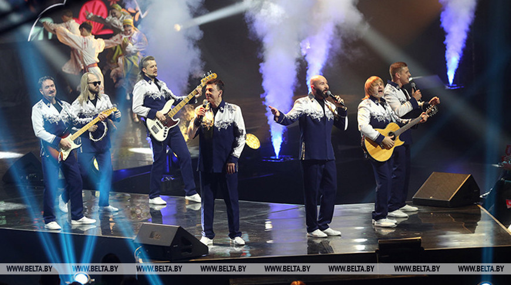

Добро пожаловать
«Песняры» — вокально-инструментальный ансамбль, основанный в 1969 году Владимиром Мулявиным. Их творчество сочетает народные мотивы с рок-музыкой и остаётся актуальным и любимым по сей день.
Бывай, абуджаная сэрцам, дарагая!
Чаму так горка, не магу я зразумець...
Шкада заранкi мне, што ў небе дагарае
На ўсходзе дня майго, якому ружавець.